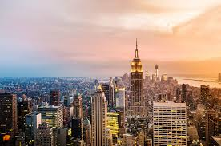

The Five Boroughs of New York City

New York City is made up of five boroughs: Manhattan, Brooklyn, Queens, The Bronx, and Staten Island. Each borough is different and special in its own way.
Together, these five boroughs are home to over 8 million people. That makes New York City the biggest city in the United States.
Whether you like the busy streets of Manhattan or the quieter neighborhoods of Staten Island, there is something for everyone in New York City.
The Five Boroughs
- Manhattan — The center of NYC with Times Square, Central Park, and tall buildings
- Brooklyn — Known for the Brooklyn Bridge, great pizza, and cool neighborhoods
- Queens — The most diverse place on Earth with food from all over the world
- The Bronx — Home to the Yankees baseball team and the birthplace of hip-hop
- Staten Island — A quieter borough with the free Staten Island Ferry and parks
Facts About Each Borough
| Borough | Population | Famous For |
|---|---|---|
| Manhattan | 1.6 million | Times Square, Central Park, Broadway |
| Brooklyn | 2.7 million | Brooklyn Bridge, pizza, art |
| Queens | 2.4 million | Most diverse, amazing food |
| The Bronx | 1.4 million | Yankees, hip-hop, Bronx Zoo |
| Staten Island | 495,000 | Free ferry, parks, seafood |